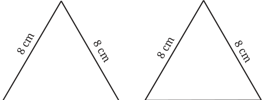
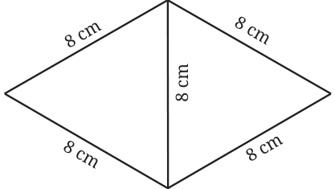
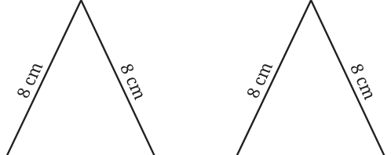
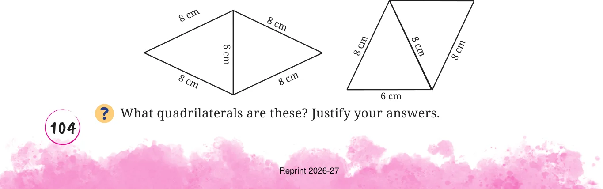
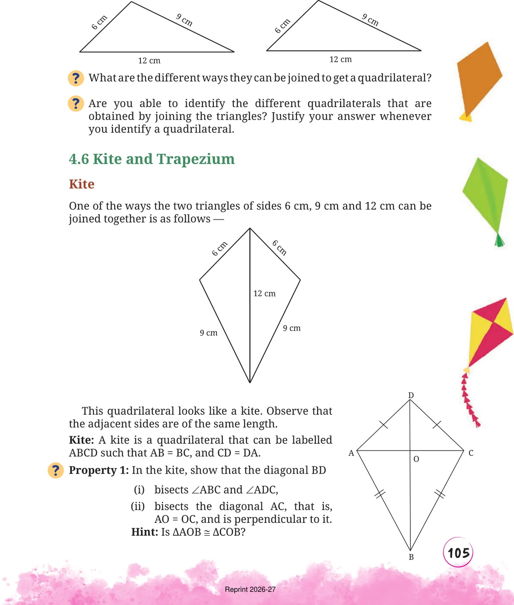

- 1.Take two cardboard cutouts of an equilateral triangle of sidelength
8 cm.

Can you join them to get a quadrilateral?

What type of a quadrilateral is this? Justify your answer.
- 2.Take two cardboard cutouts of an isosceles triangle with sidelengths
8 cm, 8 cm, and 6 cm.

What are the different ways they can be joined to get a quadrilateral?
Joining them in this Joining them in this way you get way you get

- 3.Take two cardboard cutouts of a scalene triangle with sides 6 cm,
9 cm, and 12 cm.
